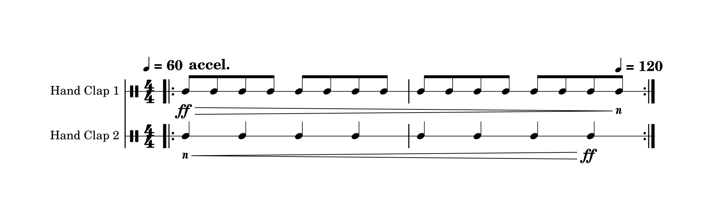
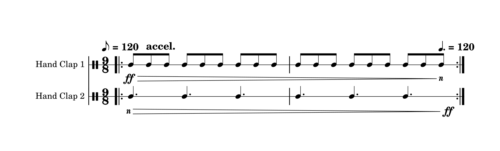
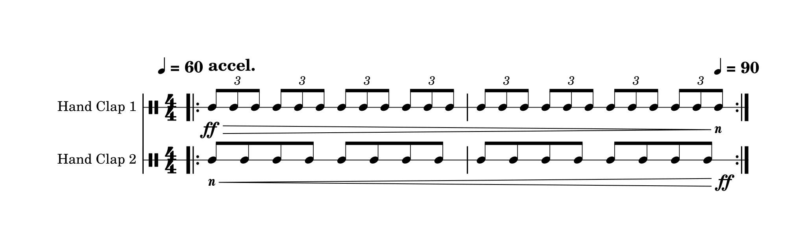
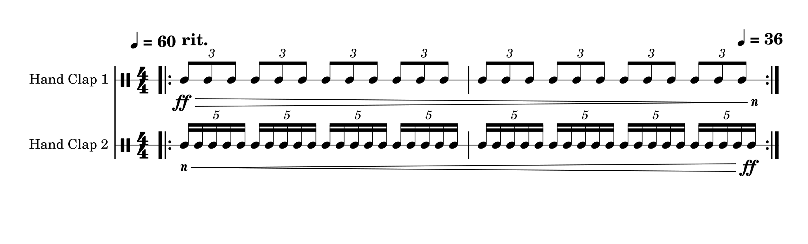

I might have invented a new type of rhythm (if this has been done before, please let me know!) by combining two other types of rhythm, one common and the other less so. Allow me to present: the Risset Polyrhythm. It's a polyrhythm which sounds like it gets slower (or faster) infinitely.
I'm going to try to explain this now, so if you found that boring you can save yourself some time and stop reading here. That came out snarkier than I was expecting, I meant it in good faith. There's a free app at the bottom though. Everyone likes free stuff I think.
Polyrhythms are familiar to most musicians; if you're not familiar, it's basically splitting up one unit of time (say 1 second) into different divisions. So if we consider a polyrhythm played on the advanced instrument known as clapping, one clapper would tap 3 times every second, while the other would tap 2. This is known as a 3:2 polyrhythm. Here is a quick demo:
Note that both rhythms line up once per time interval. Note that polyrhythms can have use any time interval, and any number of divisions. Here is a 5:4 polyrhythm over a 2 second interval:
This isn't particularly relevant to what I'm talking about here, but polyrhythms can be layered as well, for example in the case of a 2:3:4:5:6 polyrhythm, as demonstrated here by Jacob Collier:
Polyrhythms aren't that complicated in principle, although they can be difficult to perform.
Ok, now that we've got the "polyrhythm" part of the name, we need to get the "Risset" part under control. A Risset Rhythm is a type of rhythm which sounds like it gets faster or slower infinitely. If you are familiar with Shepard Tones, it is the rhythmic equivalent. The guy who invented the Risset Rhythm, Jean-Claude Risset, was also the first guy to make a continuous glissando Shepard Tone.
Anyways, here is what a Risset Rhythm sounds like (note that every time it loops, the tempo seems to double):
This works by playing the same rhythm at two tempos; in this specific case, one is twice as fast as the other. Both rhythms increase in tempo at the same rate, until both rhythms are going as twice as fast as they originally were. When this point is reached, the rhythm that was originally going at one times the speed now is going at twice the speed, and now can take on the role of the second rhythm for the next repeat. Meanwhile, the rhythm that was originally going at twice the speed fades out, so that by the time the repeat occurs, it is no longer audible. Here's what it looks like when notated:

Note that Risset Rhythms can be more complicated than single clicks. Again, I'll point you to Jacob Collier, who also explains how it works:
It is also important to note that Risset Rhythms don't need to change speed by a factor of 2! (Aside: I haven't found any examples of Risset Rhythms in the wild which change by factors of other than 2, so I might be the first to explore this as well? If something does exist, please let me know!) Here is a Risset Rhythm in 9/8 which triples in speed every time it repeats:

Risset Rhythms are pretty tricky and are rarely used, and when they are it is almost always in electronically-realized music. I've only seen or heard of a small handful of Risset Rhythms in live-performed music, and one of those was my own piece (Dream and Variations, if anyone was wondering).
Now to combine the two. As far as I know, no one has ever done this before (happy to be proven wrong though)! Prepare to be teleported to the forefront of rhythm:
Mind-blowing. Maybe. Maybe not. Up to you.
It's really just the general case of a "normal" Risset Rhythm. In the same way that non-polyrhythm rhythms can be thought as polyrhythms where one of the numbers in the ratio is 1 (e.g. eight notes in 4/4 could be thought of as a 2:1 polyrhythm with the quarter notes), non-polyrhythm Risset Rhythms are just the case where instead of multiplying the speed by a whole number, it changes by any rational number. When the rhythms are polyrhythmically aligned at the start, the math works out nicely for a clean loop.
Consider the 3:2 Risset Polyrhythm in the audio example at the beginning of this section. It starts out playing a 3:2 polyrhythm, where the 3 rhythm is occurring at 60 bpm. Over the course of 8 repetitions, it speeds up until the 2 rhythm is occurring at a speed of 60 bpm. Given that the 2 rhythm was originally occurring at 40 bpm, and is now at 60 bpm, the speed has increased by a factor of 3/2. And then the cycle repeats. Here's what it looks like in notation:

To generalize: given a polyrhythm m:n, starting tempo t, and number of repetitions per cycle r, simply repeat the m:n polyrhythm r times, starting at tempo t and the last repetition ending at tempo t * (m/n). Within each cycle, make the m rhythm increasingly quiet and the n rhythm increasingly loud. m can be greater or smaller than n; if it's greater, then the rhythm gets progressively faster; if it's smaller, the rhythm gets slower.
Here's a 3:5 Risset Polyrhythm which gets slower over the course of 8 repetitions:

Hopefully this makes sense. Feel free to let me know if there's anything I should clarify.
I made a metronome app for playing with Risset Polyrhythms, it's free on the App Store and Google Play. I'd like to make it into a web version too, but the framework I used to make the app, JUCE, requires an 3rd-party repo to build for the web which uses CMake, and CMake is terrifying. If anyone has experience with JUCE and CMake though, and wants to help out with this, I'd greatly appreciate it! But I digress, here are the links:
App Store: https://apps.apple.com/us/app/risset-metronome/id1643610474
Google Play: https://play.google.com/store/apps/details?id=com.dmitrivolkov.rissetmetronome
updated 2023-07-18